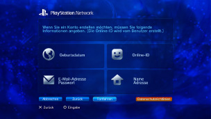

PlayStation™Network > Einschreiben
Einschreiben
Sie müssen eventuell die System-Software aktualisieren, bevor Sie diese Funktion verwenden können.
PSNSM ist der Online-Service, wenn Sie durch Aufrufen von  (PlayStation®Store) online einkaufen oder unter
(PlayStation®Store) online einkaufen oder unter  (Freunde) Chats beitreten wollen. Sie können auch verschiedene Online-Services von PSNSM nutzen. Um PSNSM nutzen zu können, müssen Sie über ein Sony Entertainment Network-Konto verfügen. Zum Erstellen eines Kontos wählen Sie
(Freunde) Chats beitreten wollen. Sie können auch verschiedene Online-Services von PSNSM nutzen. Um PSNSM nutzen zu können, müssen Sie über ein Sony Entertainment Network-Konto verfügen. Zum Erstellen eines Kontos wählen Sie  (Einschreiben) unter
(Einschreiben) unter  (PlayStation™Network) und gehen nach den Anweisungen auf dem Bildschirm vor.
(PlayStation™Network) und gehen nach den Anweisungen auf dem Bildschirm vor.

Zum Erstellen eines Kontos erforderliche Hauptoptionen
| Persönliche Daten | Geben Sie Informationen zum registrierten Benutzer ein, einschließlich des Geburtstags (Jahr, Monat, Tag), des Namens und der Adresse. |
|---|---|
| Hauptkonto/Unterkonto | Es gibt zwei Typen von Konten: Hauptkonten und Unterkonten. Hauptkontoinhaber können für zugehörige Unterkonten bestimmte Nutzungsbedingungen festlegen. Hauptkonto: Das Standardkonto kann von einem registrierten Benutzer ab einem bestimmten Alter erstellt werden. Hauptkontoinhaber können für zugehörige Unterkonten bestimmte Nutzungsbedingungen festlegen. Unterkonto: Benutzer, die die in der jeweiligen Region gültigen Voraussetzungen für ein Hauptkonto nicht erfüllen, können lediglich ein Unterkonto verwenden. Inhaber von Unterkonten können keine Brieftaschen erstellen, aber mit der Brieftasche für das dazugehörige Hauptkonto Produkte und Services bezahlen. Ein Unterkonto kann nur erstellt werden, wenn ein entsprechendes Hauptkonto vorhanden ist. Die Voraussetzungen für Hauptkonten und Unterkonten hängen vom Land bzw. der Region ab, in dem bzw. der Benutzer wohnt. Einzelheiten dazu finden Sie auf der SIE-Website für Ihre Region. |
| Anmelde-ID (E-Mail-Adresse) | Registrieren einer ID für das Anmelden am PSNSM. Verwenden Sie eine gültige E-Mail-Adresse, die zum Empfangen von Bestätigungsmeldungen beispielsweise bei einem Kauf unter (PlayStation®Store) verwendet werden kann. |
| Passwort |
Definieren Sie anhand folgender Kriterien ein Passwort:
|
| Online-ID |
Registrieren Sie einen Namen, der im PSNSM öffentlich angezeigt wird. Die Online-ID kann nicht mehr geändert werden, nachdem sie einmal erstellt wurde. Beachten Sie beim Erstellen der Online-ID Folgendes:
|
Anmerkungen
- Besuchen Sie zum Erstellen eines Unterkontos die folgende Website:
https://www.playstation.com/acct/family - Bei Minderjährigen wird je nach dem Alter zum Erstellen des Unterkontos ein PC benötigt. Beim Erstellen des Kontos wird eine E-Mail an die mit der Anmelde-ID des Hauptkontoinhabers verknüpfte E-Mail-Adresse geschickt. Gehen Sie zum Abschließen der Registrierung auf einem PC wie in den Anweisungen in der E-Mail erläutert vor.
- Für die Anmeldung am PSNSM mit einem neu erstellten Unterkonto muss das Konto einem Benutzer zugeordnet werden, der sich am PS3™-System einloggen will. Näheres dazu finden Sie unter [Verwendung eines bestehenden Kontos] unter (PlayStation™Network) in diesem Handbuch.
- Ihre Anmelde-ID (E-Mail-Adresse) und das Passwort werden nicht öffentlich angezeigt. Achten Sie darauf, diese Informationen nicht an Dritte weiterzugeben.
- Sie können auf dem PS3™-System nur ein Konto pro Benutzer erstellen. Wenn Sie weitere Konten erstellen wollen, wechseln Sie zu
 (Benutzer) und erstellen zusätzliche Benutzer.
(Benutzer) und erstellen zusätzliche Benutzer. - Einzelheiten zur Handhabung persönlicher Daten von Benutzern finden Sie auf der SIE-Website für Ihre Region.
- Für den Zugriff auf das PSNSM ist ein Breitband-Internet-Service erforderlich. Beachten Sie, dass Wählverbindungen nicht unterstützt werden.
- PSNSM steht nur in bestimmten Regionen und Sprachen zur Verfügung. Weitere Informationen dazu erhalten Sie beim technischen Support für Ihre Region.
- (Einschreiben) wird nur angezeigt, wenn kein Konto erstellt wurde.